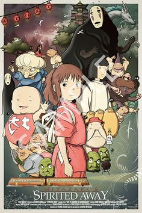
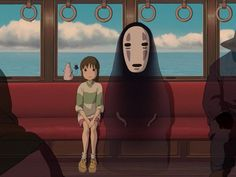
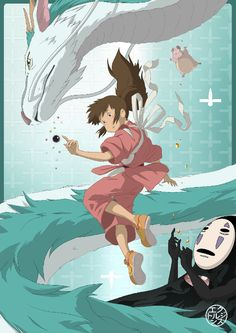

O Filme
A vida de Chihiro sofre uma reviravolta quando seus pais decidem se mudar e ela precisa se despedir de seus amigos. No caminho para seu novo lar, um atalho escolhido por seu pai os leva até um túnel. Guiados pela curiosidade, os pais de Chihiro deixam o carro para trás, resolvendo abraçar aquela oportunidade de conhecer um novo lugar e ela os segue por aquilo que se revela um portal. Quando a luz surge no fim do túnel, a família é recebida por uma cidade deserta, porém os restaurantes possuem suas bancadas abastecidas com diversas comidas. Chihiro sente o perigo, mas a fome de seus pais fala mais alto que o bom senso: eles se sentam em um dos restaurantes e comem de forma desesperada, prometendo deixar o pagamento antes de se retirarem. Quando anoitece, eles são punidos por comerem o que não lhes pertencia e transformados em porcos. Apenas Chihiro poderia salvá-los. Você teria coragem de embarcar nessa aventura que mudará a sua vida assim como mudou a de Chihiro?
A Viagem de Chihiro é um filme japonês de animação, dos gêneros aventura e fantasia, lançado em 2001. O longa-metragem foi escrito e dirigido por Hayao Miyazaki, com as vozes de Rumi Hiiragi, Miyu Irino, Mari Natsuki, Takeshi Naito, Yasuko Sawaguchi, Tsunehiko Kamijō, Takehiko Ono e Bunta Sugawara. O longa narra as aventuras de Chihiro Ogino (Hiiragi), uma menina de dez anos que se encontra em mudança com a sua família. Miyazaki escreveu o roteiro após decidir que a história seria baseada na filha de seu amigo Seiji Okuda, produtor associado do filme, que tinha dez anos à época; a garota fazia visitas frequentes à casa do diretor todo verão. Na época, ele estava a trabalhar em dois projetos diferentes, mas ambos foram rejeitados em favor do longa-metragem. A produção de A Viagem de Chihiro começou em 2000, com um orçamento de 1,9 bilhões de ienes. É a décima-terceira produção do Studio Ghibli e a sétima realizada por Miyazaki dentro do estúdio, a animação chegou aos cinemas japoneses em 20 de julho de 2001, pela distribuidora Tōhō. A produção tornou-se a mais bem sucedida da história do cinema japonês, conquistando mais de 352 milhões de dólares mundialmente. No seu país de origem, o filme desbancou Titanic como a maior bilheteria de todos os tempos, com um total de 30,8 bilhões de ienes.
Aclamada pela crítica internacional, a obra é frequentemente citada como uma das melhores da década de 2000, e uma das melhores animações de todos os tempos. O longa-metragem foi vencedor do Óscar de melhor filme de animação em 2003, tornando-se a primeira (e única) produção que não tenha o inglês como língua original a vencer essa categoria. Foi, também, co-recipiente do Urso de Ouro no Festival de Berlim em 2002, dividindo o prêmio com Domingo Sangrento, e se encontra entre os dez mais votados da lista de filmes que deveriam ser assistidos até os catorze anos, compilada pelo British Film Institute. Em 2016, foi eleito o quarto melhor filme do século XXI por 177 analistas de cinema ao redor do mundo. No ano seguinte, foi, ainda, selecionado como o segundo melhor filme do século XXI até então, pelo jornal The New York Times. No Brasil, foi lançada em 2021 a edição especial de colecionador do filme em blu-ray pela Obras Primas do Cinema em parceria com a Bazani e a Europa Filmes.
Temáticas
A temática principal do filme é a viagem liminar que a protagonista realiza até o reino dos espíritos, onde se vê em mundo desconhecido. O trânsito de Chihiro neste reino alternativo, que pode ser comparado com Alice no País das Maravilhas de Lewis Carroll, representa a transição da infância até a fase adulta. O aspecto arquétipo do outro mundo delimita a condição de Chihiro com alguém se encontra entre a fase de ser criança e de ser adulto. A personagem também se encontra fora dos limites da sociedade ao se encontrar com o sobrenatural. Por sua vez, a personagem Yubaba compartilha várias semelhanças com o cocheiro de Pinóquio, já que este transforma os meninos em asnos da mesma forma que a bruxa transforma os pais em porcos. Ao conseguir emprego na casa de banhos termais, Yubaba rouba o verdadeiro nome de Chihiro (que passa a se chamar Sen), o que simbolicamente significa a morte da menina, que deve assumir então a fase adulta. Chihiro segue um rito de passagem segundo o formato do monomito, e na sua tentativa de recuperar a continuidade do seu passado, deve forjar uma nova identidade.
A Viagem de Chihiro faz uma crítica a sociedade japonesa moderna em relação ao conflito de gerações e a luta para quebrar as tradições da cultura tradicional. Chihiro é vista como uma representação do gênero Shōjo, cujos papeis e ideologias mudaram drasticamente no Japão pós-guerra. Chihiro busca resgatar sua identidade passada, assim como o Japão busca os antigos valores em meio ao decrescimento econômico na época em que o filme foi feito. Em uma entrevista, Miyazaki comentou sobre este elemento nostálgico do antigo Japão.
O filme também crítica a poluição ambiental quando o Deus do Rio aparece deformado em lixo. A casa de banhos pode ser vista como um lugar luxuoso e repleto de avareza, e com a aparição de Sem Rosto, um espírito que reflete a personalidade de quem o rodeia e que devora quem sucumbe a ganância, se torna o cenário ideal para ocorrer um massacre, com o dito espírito devorando vários funcionários da casa termal; porém logo são salvos por Chihiro quando o alimenta com bolinhos deixados pelo Deus do Rio; assim, Sem Rosto volta a ser tímido e inofensivo quando confronta a pureza de Chihiro. No final do filme, Zeniba (irmã gêmea de Yubaba) decide adotá-lo para evitar que seja exposto pela influência negativa da casa de banho.
Crítica
A Viagem de Chihiro foi aclamado pela crítica. No web site Rotten Tomatoes, o filme possui 97% de aceitação entre os críticos, com um total de 152 comentários e com uma qualificação média de 8,5/10. O consenso entre os críticos é: “ A Viagem de Chihiro é uma deslumbrante, encantadora e magnifica elaborada história que deixara os espectadores um pouco mais curiosos e fascinados pelo mundo que os rodeia”. No mesmo site ocupa a décima terceira colocação em uma lista dos cinquenta melhores filmes animados. No Metacritic, conseguiu uma qualificação de 96/100, baseado em 41 críticas, indicando "aclamação universal". Enquanto que no Internet Movie Database (IMDb), obteve uma pontuação de 86/100 dada pelo público – 281 mil votantes – ocupando o trigésimo sexto lugar no top 250.
Roger Ebert, crítico de cinema do Chicago Sun-Times, deu quatro estrelas completas e louvou tanto o filme como a direção de Miyazaki. Ebert também qualificou A Viagem de Chihiro como um dos melhores filmes do ano. Kenneth Turan, do Los Angeles Times considerou boas as atuações de voz, e disse que o filme “é um produto de uma intrépida imaginação cujas criações são diferentes de qualquer coisa que havia visto antes”. Igual a Ebert, Turan elogiou a direção de Miyazaki. Jay Boyaer, do Orlando Sentinel, também fez bons comentários sobre a direção, e comentou que o filme é “uma opção perfeita para um menino que se mudou para uma casa nova “. Elvis Mitchell, do The New York Times, deu uma resenha positiva para o filme, e elogiou as sequências de animações. Também realizou uma comparação favorável com a obra Alice Através do Espelho e O Que Ela Encontrou Por Lá de Lewis Carroll, indicando que os personagens “intensificam a tensão do filme”. Por sua vez, Derek Elley, do Variety, comentou que A Viagem de Chihiro “pode ser desfrutado tanto por jovens como por adultos”, e igualmente elogiou a animação e a música.
Prêmios
O longa ganhou trinta e cinco prêmios, entre os quais incluem o Oscar de Melhor Filme de Animação em 2003. Assim, se tornou o segundo filme a receber esta condecoração, pois a categoria se iniciou em 2002, sendo o único filme em língua não-inglesa a ganhar o prêmio até agora. Na vigésima quinta premiação dos Prêmios da Academia Japonesa – o equivalente japonês do óscar – recebeu os prêmios de melhor filme do ano e melhor canção. No Festival Internacional do Cinema de Berlim de 2002, o longa-metragem conquistou o Urso de Ouro, ex aequo com Domingo sangrento, sendo a única animação a consegui-lo até o momento.